My DIY Bathroom Renovation
In January 2022, I began renovating our master bathroom. It took me six months and was more involved than I expected (how many DIY'ers have said that before? 🤔).
By the time it was done, I was ready to do something else with my evenings and weekends.
That said, it turned out really well. It's much warmer, more functional, efficient, safe, easy to clean. I love the peaceful aesthetics.

The renovation required me to wear these hats: design, demolition, plumbing, electrical, carpentry, drywall, waterproofing, tiling, painting, insulation, window replacement. Friends in the trades guided me, especially with the electrical and plumbing bits. My brother loaned me his tile saw. I am fortunate that Lisle supports DYI'ers by allowing them to act as their own contractors for plumbing and electrical (Downers Grove, for instance, does not allow that).
Inspiration
During a 2021 Brauer reunion in Southern Illinos at the end of August, a relative staying at Mom's house tried to adjust the rain-head showerhead, and it broke off (not entirely her fault; it was piece of cheap plastic). I took a look and told Mom it needed some deep fixing; the plastic pipe was broken off behind the shower. She said Why not just redo the whole shower?
In mid-September, I took out the fiberglass tub and shower. Mom had a local handyman put in a walk-in shower with custom tile; he got it done shortly before Thanksgiving. Parts of it were inspired by Uncle Rich's DIY shower at his house by Lake Petersburg. I saw Mom's shower, and went home thinking (a) it looked pretty good, and b) I could do better.

Demo'ing Mom's downstairs bathroom, September 2021
In early October, I put in a dedicated water heater for our master bath (more on that later), as a prelude to the upgrade.
When Grace and I stayed over at my sister's house during the holidays, I took a look at their bathroom they had done themselves. I loved the Roman-style textured light tile, and decided to use something similar. I also liked the bench, the wide grout spacing, and the use of large tiles.

Jim and Megan's bathroom
I eventually found a travertine-style tile at Home Depot, "Travisano Trevi". That pattern guided me to further Roman-themed choices expressing a simple, uncluttered, calm atmosphere. That pattern came in six-inch and twelve-inch sizes.

Design
Utility
Here is the old bathroom.

The bathroom before starting renovation
We weren't using the jacuzzi any more. The openings accumulated black mold.
The old tub and shower was difficult to keep clean. The glass doors required frequent cleaning, and the caulk around the tub mildewed and needed to be replaced occasionally--an arduous, time-consuming and messy job.
The bathroom was cold. Being converted from a garage, it was at the far end of the house from the furnace. The window was single-pane uninsulated glass, which made it worse.
Use of space
The jacuzzi tub took up a lot of space.
The ceiling box above the tub--presumably for concentrating steam inside the shower space--made an already small room even smaller.
The vanity and cabinet were too large for the space.
Safety
The inside of the tub was slippery and slanted. The glass door track was sharp, making it dangerous to get in and out of the shower.
The window lock didn't work. The counterbalance was broken, so that the window didn't stay up on its own.
Decor
The vanity was dated. The cabinet was likely a repurposed kitchen cabinet. The linoleum floor was old and peeling.
Wish List
Walk-in shower, wheelchair-accessible
A walk-in shower means less to trip over--important as we get older! Grace wanted a vent at the top, to allow steam to escape more easily. For wheelchair access, the shower entrance needed to be 30 inches wide. I wanted to avoid thresholds if possible. They tend to need fixing, accumulate dirt, and make a tripping hazard.
Roman travertine-style tile
Travisano Trevi tile by Marazzi inspired by Megan's walk-in shower, with 3/16" spacing. The pattern and spacing work well together, and 3/16" is forgiving to a newbie tile guy.
Heated tile floor
I wanted to change the character of the bathroom to be warm and inviting. My Uncle Bob had put in a heated basement floor when building his house outside Petersburg; it was so nice to walk on! A heated floor would go a long way toward making it a desirable place.
Conserving water
A Delta shower valve and trim with flow control and temperature control, combined with a rain showerhead, makes it easy to use only the water you need. Additionally, a hand shower would be usable as a bidet--something Grace liked when staying in London while visiting Lydia--and save even more water.
Corner bench
Mom's corner bench in her new walk-in shower is useful. I wanted to make ours a little lower and a little wider.
A calming, uncluttered space
The old bathroom was a busy, jarring set of patterns that did not go well together. I wanted a peaceful cohesive design, uncluttered but not stark.
New Window
The new window would be well-insulated, cleanable from inside, with panes allowing it to be opened at the bottom or top.
Lighting
A light in the shower itself helps make it welcoming. With a narrower frame, a new window would also let in more light.
A big sink with plenty of depth
Sometimes I like to use the sink to wash my hair. The small sink did not lend itself to such practices.
Challenges
- Getting the shower drain right. Lots of engineering goes into a well-installed drain!
- Building and anchoring the shower wall, since it wouldn't sit directly under a rafter.
- Waterproofing the shower. Standard drywall is not rated for shower walls, and waterproofing requires extra work and material.
- Embedding the heating elements in the floor, and wiring them to the thermostat.
- Wiring the shower light from the attic.
- Learning to tile and grout.
- Learning to replace a window.

Dedicated Water Heater
As the first step in upgrading the bathroom, I put a dedicated 20-gallon water heater in the crawl space just below and next to the room.

 Along the way, I refactored a lot of piping. I removed a 3/4" hot water line running all the way across the house, which had been added when the attached garage at the north end of the house was converted to a master bedroom and bathroom. It was taking a looong time to get hot water to the bathroom, and wasted lots of hot water in the process.
Along the way, I refactored a lot of piping. I removed a 3/4" hot water line running all the way across the house, which had been added when the attached garage at the north end of the house was converted to a master bedroom and bathroom. It was taking a looong time to get hot water to the bathroom, and wasted lots of hot water in the process.
I also removed a bunch of unused pipe that had been left in place from previous projects. -->
It was an interesting exercise re-attaching the dishwasher line and the humidifier line. I didn't realize at first that the humidier was being fed hot water, although it makes sense; hot water evaporates more quickly, which is more efficient. I discovered SharkBite fittings, expensive but awesome, especially where (a) one can't easily sweat a copper joint without setting something on fire, or (b) one might need to disconnect the pipe later for whatever reason.
In the latter case, a SharkBite fitting on the water heater's hot water line came in handy when I discovered the humidifier requirement; I popped off the fitting, added a tee, and popped it back onto the bottom of the tee:

Note that the tee isn't only for the humidier. The humidifier actually taps into the line via a saddle valve. The additional plastic quick-coupling fitting (not Shark-Bite) goes to the dishwasher.
Feeding the humidifier from a nearby hot water source saves energy, and the humidifier is more effective since it's getting hotter water. Previously, by the time the trickle of water reached the humidifier from the far-off main water heater, it was merely warm at best.
While running power to the water heater, I also fixed an ancient wiring mess to the oven.


Demolition
While Grace was out of town...


I had already bought the new sink. I put it in temporarily while taking out the linoleum floor.


Taking out the window, 'way later on. Note the new window leaning against the wall, inside.


Heated Floor
I decided on ThermoSoft resistance heat pads, one in front of the toilet and sink, and one in the shower. They needed to be buried in the floor, so I raised the floor around the pads using 3/4" plywood. Total cost of pads, thermostat and sensors: about $600.


With the plywood in place, I could start covering up the pads.


For the shower floor, I first needed to float the right slope, while leaving enough margin to cover the heating pad.


I initially installed the thermostat too close to the shower; it wouldn't have passed inspection. I had to move it.


This was better. (It's where the timer box for the jacuzzi was. Now I know why they put it way over there!)

 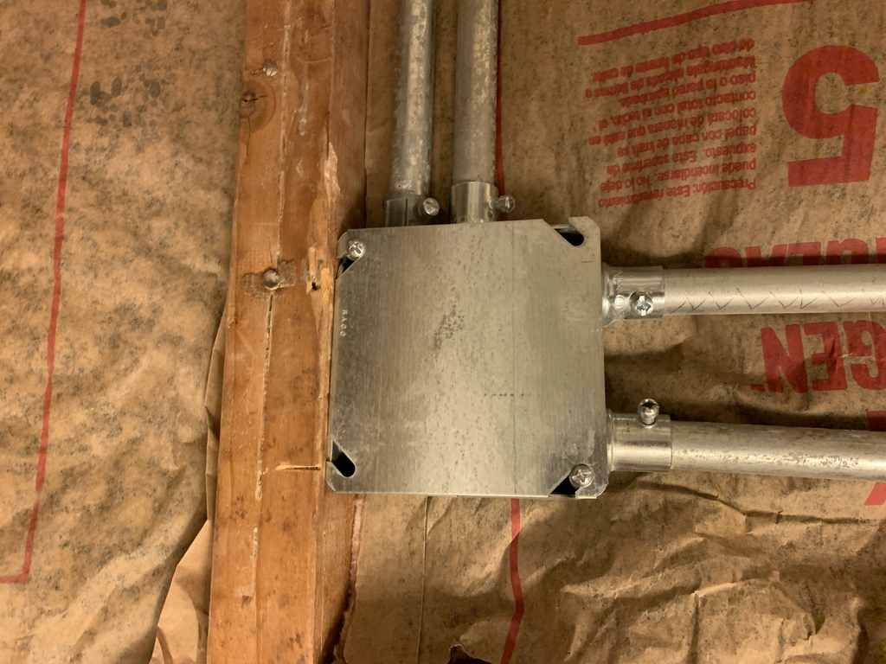
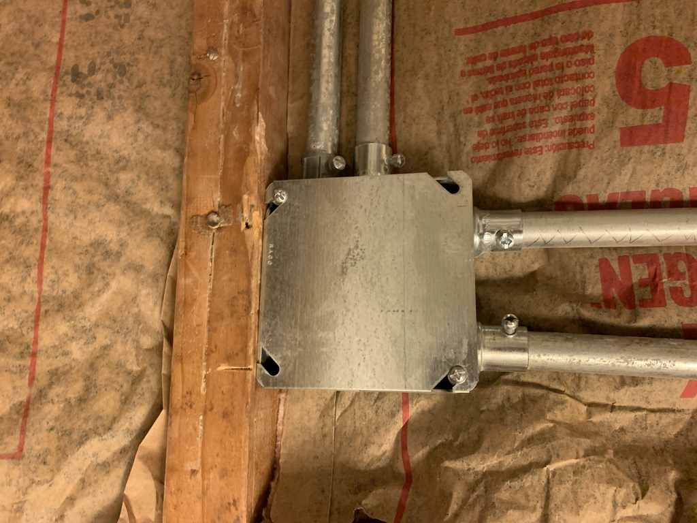
Ceiling and Light


 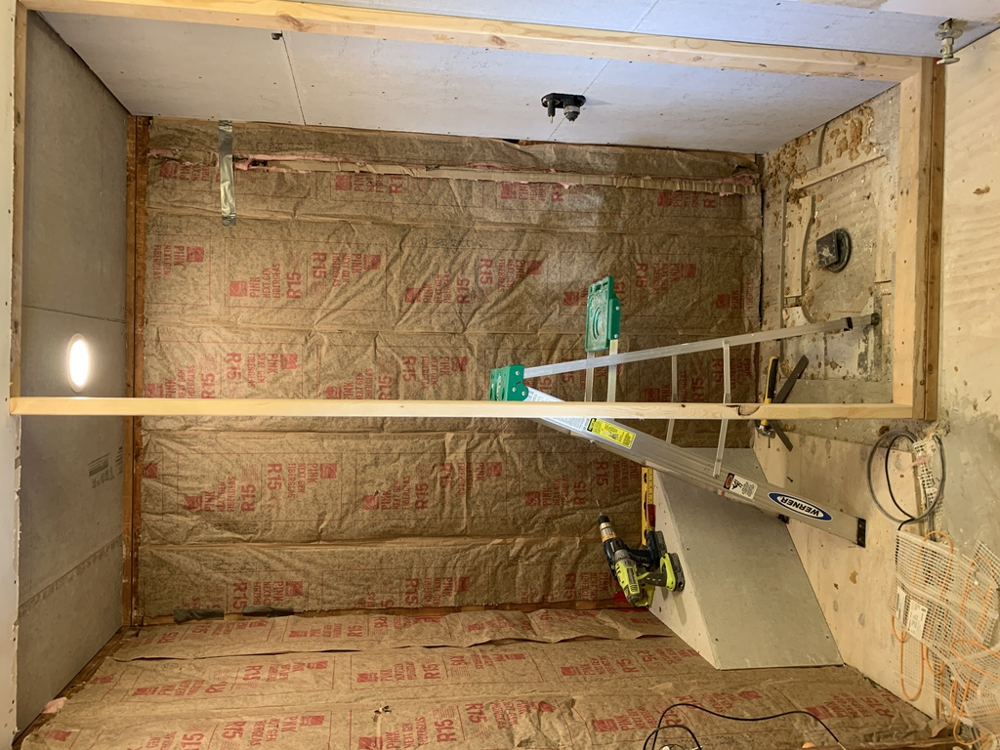
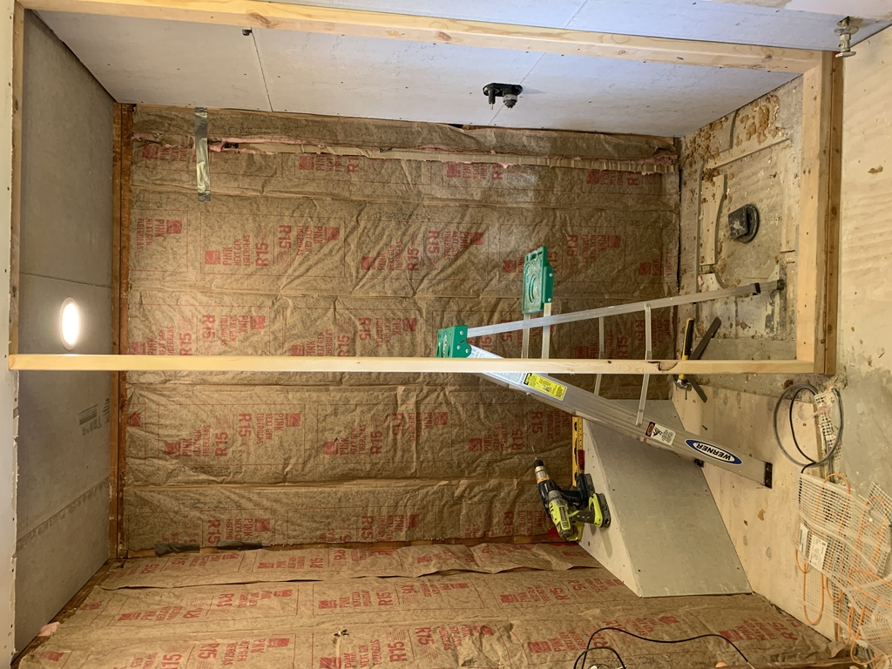


Walls and Insulation
As I went along, it became clear that much of the insulation would need replacing.
I initially brought home some MoldTough green drywall, but then discovered that it isn't rated for showers. So I took back the 5 4x8 sheets, and went with 0.42" "HardieBoard" cement backer board, which comes in 3x5' (due to its weight, no doubt).
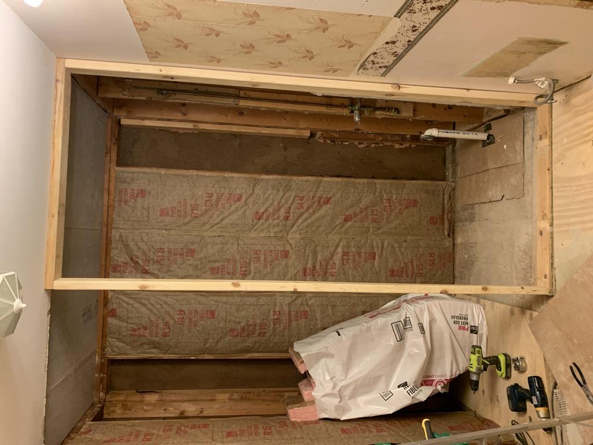

Insulation started going in on 19 Jan.
Cement backerboard started a month later, 20 Feb. I needed to do the plumbing and wiring, and have the rough inspection done first.
Pre-inspection movie for Rick's plumber friend


I sistered a 2x6 along a rafter, in order to anchor the top of the wall where I wanted it to go.


The height difference between the shower ceiling and the rest of the bathroom was an issue. I resolved it by adding a 2x2 after putting up the rest of the backer board. In retrospect, I should have put the 2x2 on the bottom of the rafters, and just lowered the shower ceiling by 2 inches.


Grace asked for the steam vent.

Shower Bench


Shower Drain


Sink and Plumbing
Glacier Bay Westminster sink and pedestal. I installed it temporarily after taking out the old sink.


Shower Plumbing and Fixtures


It was difficult to get the valve hot enough to solder the copper onto it; the valve absorbed a lot of heat.
The elbow for the shower head

The fireblock foam (the orange stuff) is required by code.
I fastened the pipe for the hand shower a couple feet below the elbow, in order to leave some wiggle room in case I needed to pull it forward for tile clearance, but also keep it snug against the tile; and in fact, that is how it worked out.
Notice from the pic on the left that I had forgotten to put in water hammer arrestors. There were some by the sink originally, but now they're gone, so these are extra-necessary.

13 Feb 2022 - Everything shower-plumbing-related pretty much in place and ready for rough plumbing inspection.


Windows


A lot of specification goes into a window!

Now that the wallboard and waterproofing is in place, time to tackle the window replacement. How the heck is the old window fastened in there?? I may want to keep the trim, if I can avoid destroying it while getting the old window out ...


 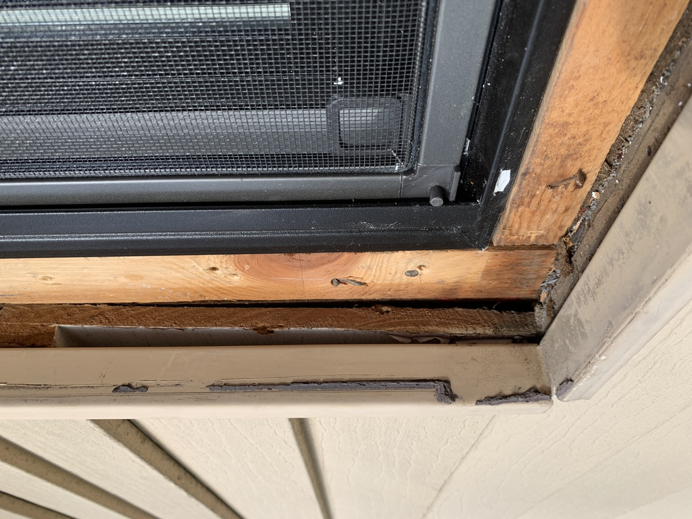
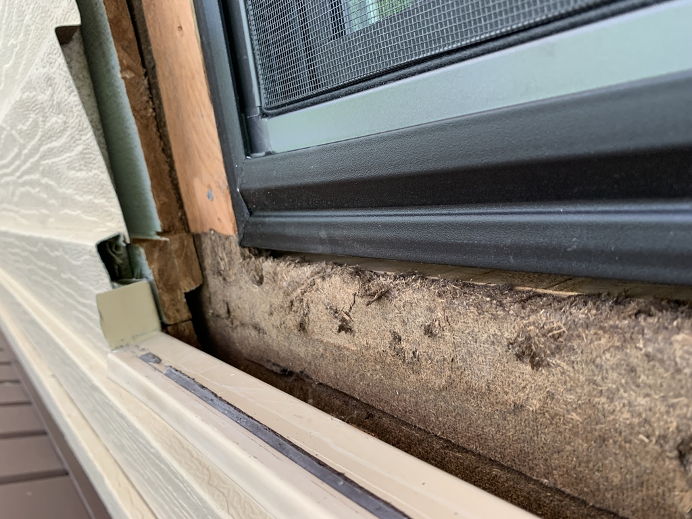
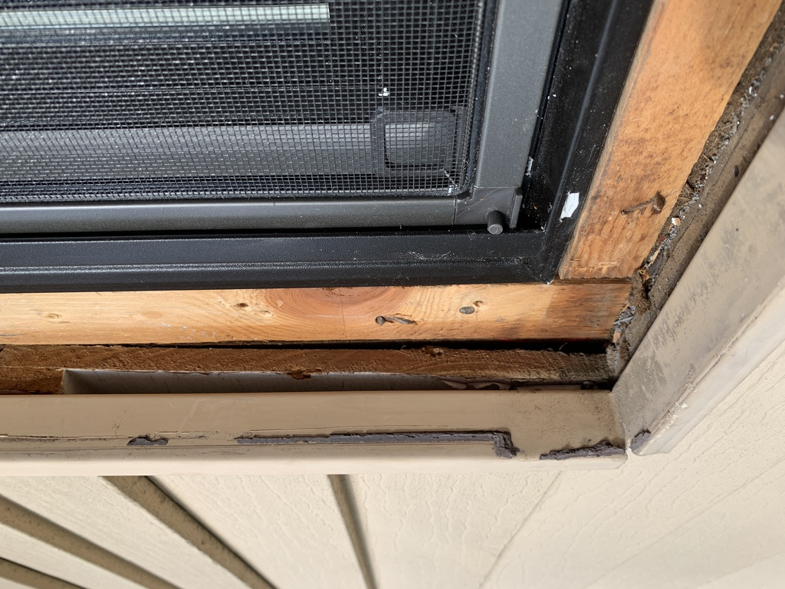
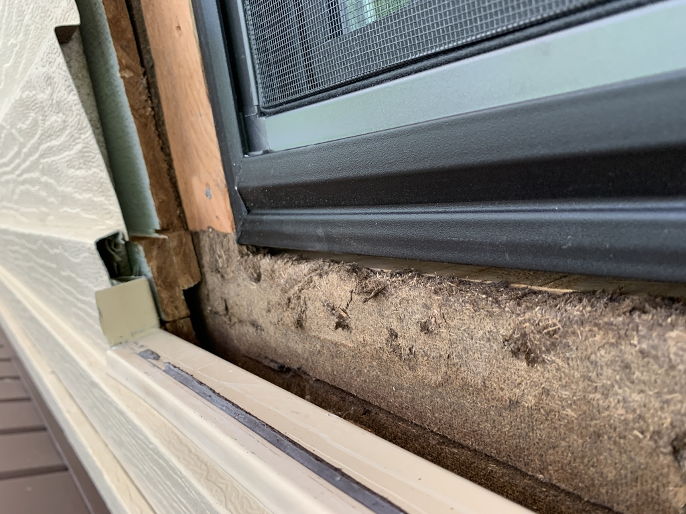


Shower Cubbyhole
Before tiling the cubby, I sealed the edges with seam tape and redgard.

I planned the wall tile around the cubby so that the cubby top and side tiles fit behind the wall tile, and the cubby shelf overlaps the bottom wall tile.

I really like how the shower cubby tile turned out. I wasn't sure how I'd tile the cubby right up until I started piecing it in. I did the wall tile around it first, and then I tried a shelf piece at the bottom right that just happened to line up with the seam. At that point, I realized it would work beautifully to continue the vertical line right up the back of the cubby.


I tiled the cubby from bottom to top, the cubby floor having a very slight slope toward the shower.
Waterproofing
Started 26 March 2022
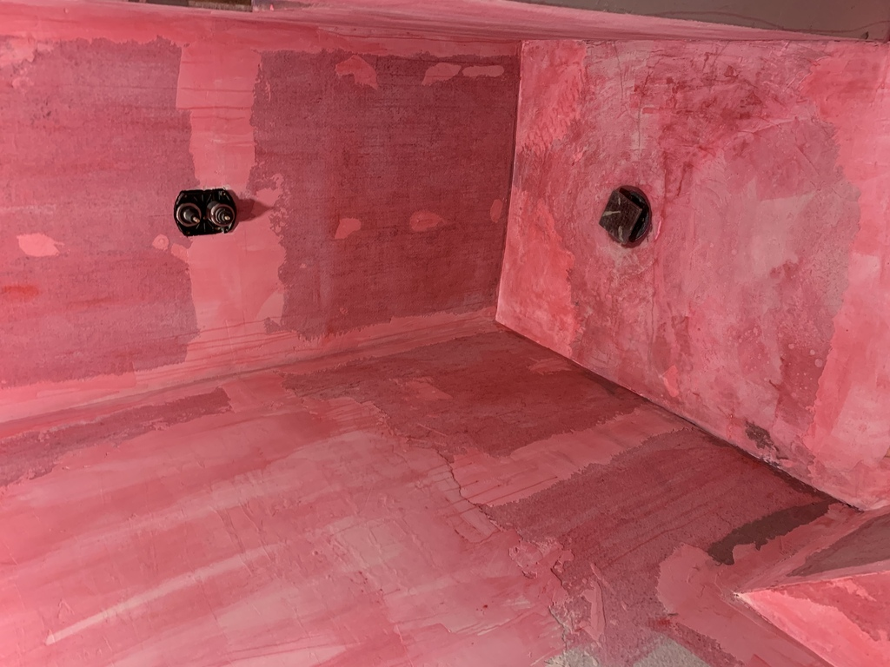
5" waterproofing seam tape around the shower drain and all corners. Triple-coat RedGard on the shower floor and 18" up the wall.


Seam tape around the shower cubby corners.


Getting the Drain Waterproofing Right
Very important to seal the floor around the drain, all the way over the edge of the drain base, so that water can only go down the drain, even if it gets thru the grout and underneath the tile.
I screwed the drain flange bolts partially in and taped the heads, so the RedGard wouldn't foul the threads.
Fastening the flange down over the waterproofing. Note the weep channels and weep holes in the flange, to allow water to escape into the drain.
Floating the final slope into the edge of the drain grate. The grate is aligned at a 45 degree angle, parallel with the edge of the shower bench.
Note the small gravel (courtesy of Lydia's fish tank supplies😃) embedded in the mortar. Under the lip of the grate, it is loose around the flange, preventing the weep holes from getting plugged with mortar. If any water were to get beneath the tile (the grout is not 100% waterproof), it still has a route to the drain and not the floor.
Didn't need to RedGard the whole thing, but I had 3 gallons, and didn't want to waste it. Although if I'd known how much trouble it would be to get a smooth surface to paint on top of RedGard, I probably would have thrown the extra RedGard away!
Oh well. At least the walls have absolutely no chance of steam getting through.
Tiling - 1 April to 31 May
A trial layout, to see how the diagonal pattern would intersect with the drain and walls. The broken pieces to the left are my attempt to cut a drain-sized square from the middle of a six-inch tile. It became abundantly clear that approach was never going to work!
The drain grate, mortared into its final position. See Getting the Drain Waterproofing Right.
First tile laid - 1st April

The shower floor is coming along well; the diagonal pattern aligns cleanly with the bench and the grate, and the six-inch tiles are laying nicely into the concave slope of the shower floor.
More floor - 8th April


So many tiles...
More floor - 9th April


 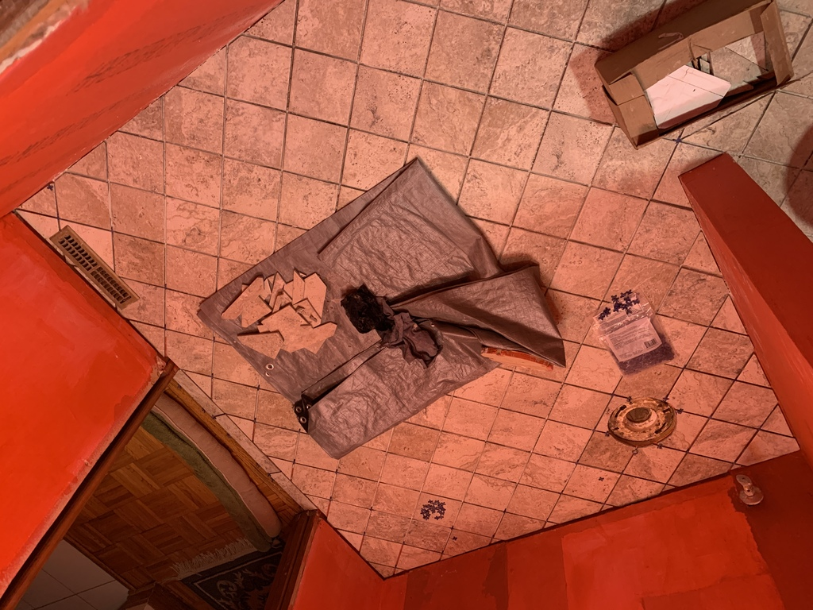
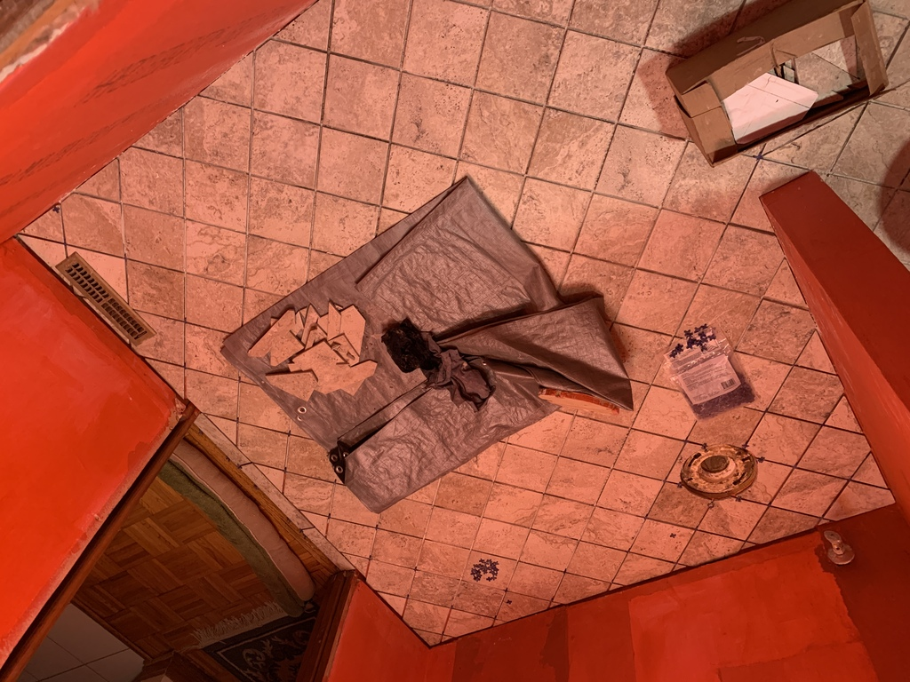
Tiling the Bench - 30th Apr to 4th May


Laying Wall Tile - 30 April to 31 May
One tricky bit about the walls was positioning the tile seams horizontally and vertically to avoid awkward intersections with fixtures, floors, or corners. I didn't want to deal with cutting and placing slivers of tile, which wouldn't look good nor last well.
Also, I needed to keep everything aligned all the way around the shower.


I started from the middle of the bench, so that it would align with the floor seams. On the opposite wall, I started so that the steam vent, the cubby, the floor, and the corner would come out right.
Now I needed to make everything come together. As I went, I realized I had a 3/16" height discrepancy that would have to be resolved before the courses met. This was due to my uncertainty about exactly how the seam width would work out.
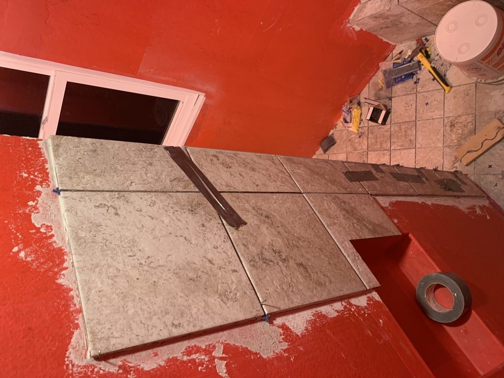

Shower Cubby - 11 May
Continuing With Wall Tile ...


Holes for the shower pipes.
How to Break 😕 and Fix a Tile - 22 May
Careful work with a hammer and cold chisel is required, but it's not as bad as I had feared.
Back To Wall Tile ...


 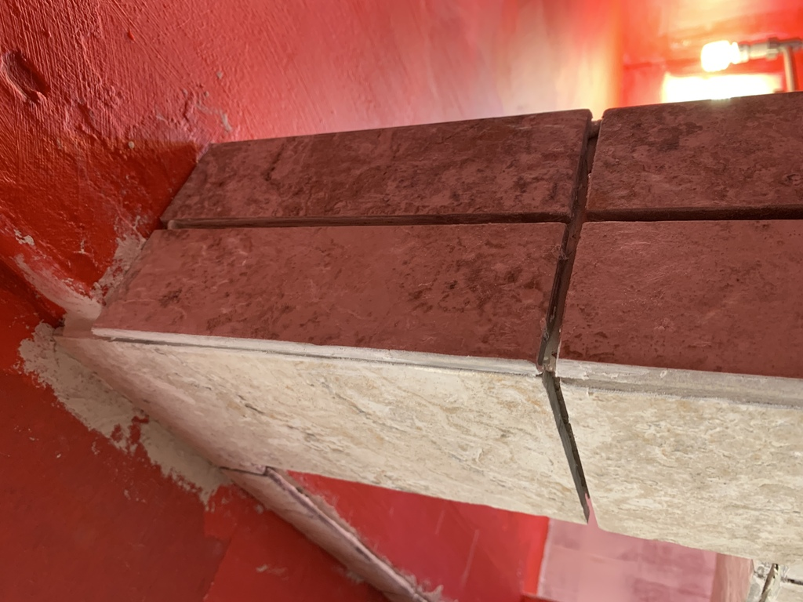
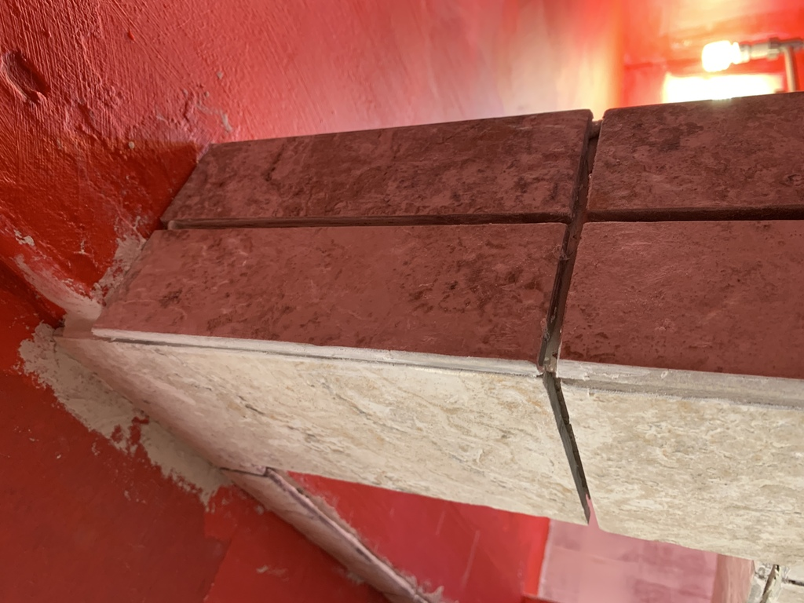


Finished tiling 31 May, nearly two months to the day after I started. 433 full or partial tiles laid!
Grouting

Prototyping a dark "Coffee Bean" grout...Nope.

The light colored is looking much better. Polyblend Plus non-sanded, #386 Oyster Gray. (Pay no attention to reddish hue, it's the RedGard all over the walls and ceiling).
Shower floor and bench grouted. (The not-grouted floor tile is where I replaced a chipped tile).


June 8th - Grouting finished!
Mudding
Taping seams before waterproofing...


Smoothing the walls after waterproofing...
 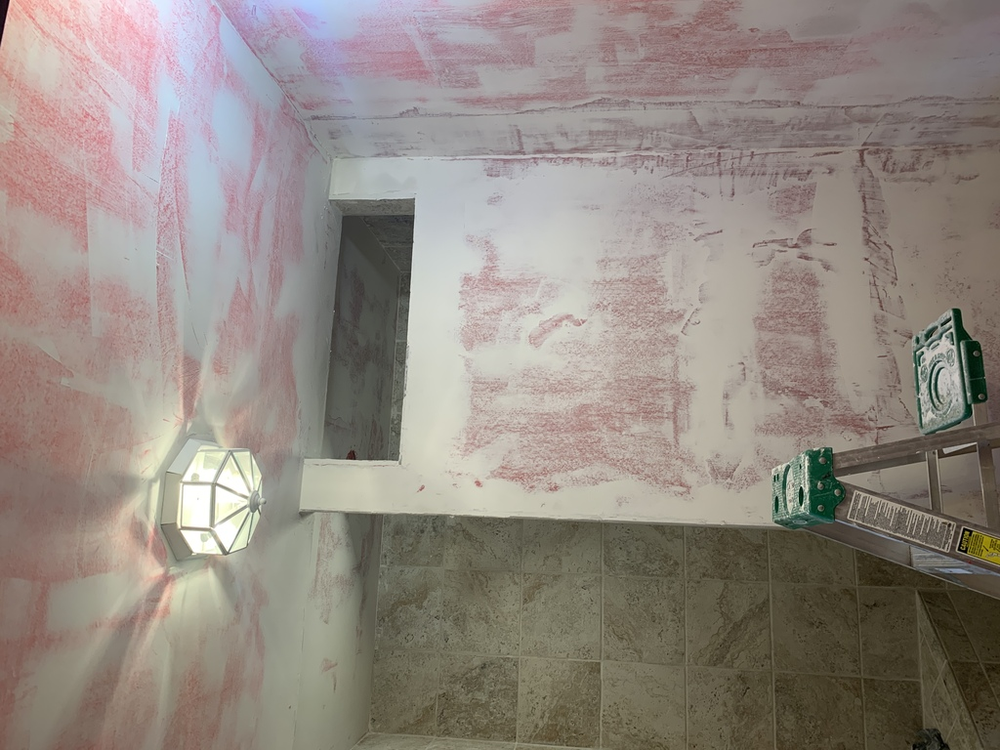
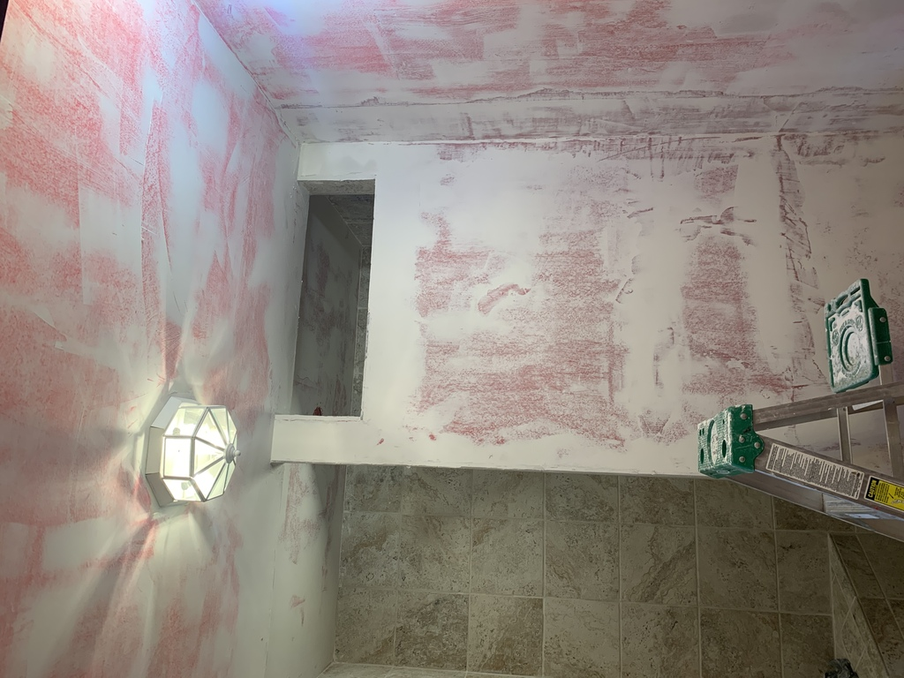

Painting and Trim
My friend Bob, with decades of construction experience, shared valuable insight.
Do your best, and caulk the rest
Also...
Caulk and paint make a carpenter what he aint
He also taught me the three phases of construction project management:
- The design phase
- The build phase
- The lawsuit phase
The prepainted real wood is more expensive, but I think it looks better.


 Getting the trim corners "good enough" required a few trips back and forth to the chop saw.
Getting the trim corners "good enough" required a few trips back and forth to the chop saw.


Painting the bathroom side of the slot door completed the atmosphere, setting the room off from the rest of the house and creating a light, calm and uncluttered space.


Wrap-Up